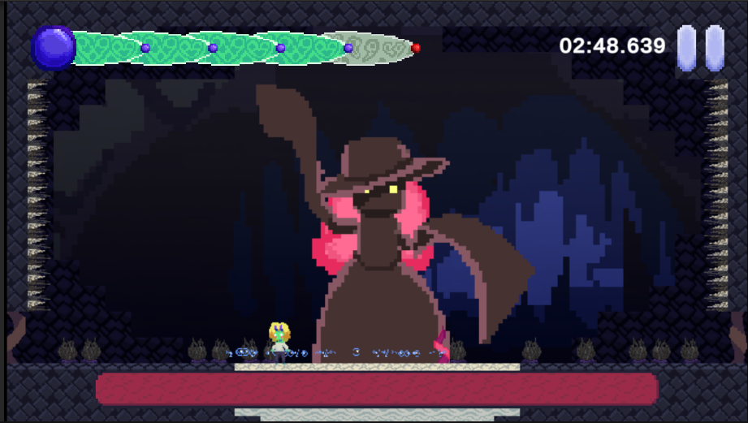
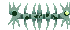

A criação desse jogo foi uma nova experiência na vida, já que é a primeira vez que tive que trabalhar em um projeto sério e não um trabalho designado por uma matéria. O processo de criação dos designs dos personagens foi uma das partes mais divertidas para mim. O tema do jogo desde o começo era aquático, mas eu decidi fazer a primeira versão da protagonista um robô com braços de tentáculo (a única característica da primeira versão que tinha algo a ver com o tema do jogo).
Como a primeira versão não fez muito sentido, comecei a pesquisar por criatura marinhas até que eu me deparei com, duas criaturas específicas: a primeira foi um lesma do mar, em particular a ovelha-folha, uma lesma capaz de realizar fotossíntese. O novo design da personagem veio quase instantaneamente na minha cabeça e só tive que fazer mínimos reajustes que fossem viáveis de animar para o jogo(o design final acabou não tendo o rabinho).


A segunda foi a água-viva fantasma gigante, as cores e aparência da criatura é tão bonito que eu quase fiz a protagonista ser uma água-viva, mas decidi permanecer co design da lesma e reutilizar esse design de outra forma. O save point eu sabia que eu queria fazer algo envolvendo luz, então a primeira ideia foi uma lâmpada que a versão final virou um coral em formato de sol.


Durante o período de produção do jogo, apesar de alguns momentos de dificuldade, fazer as sprites/arte do jogo foi um processo sem muita dificuldade, o problema é que eu queria ter aprendido programação, mas eu decidi fazer a arte ao mesmo tempo, o que no começo parecia atingível. Em poucas semanas, a arte virou o meu foco por completo. A carga da arte que tive que fazer roubou toda minha atenção: adicionando mais blocos, fazendo eles misturarem, mas o pior ponto foi quando descobrimos que a sprite da protagonista estava muito alta para o jogo e tive que refazer ela todinha de novo. Quando chegou nas etapas finais do jogo, eu comecei a editar e criar áudios para os inimigos e protagonista. Olhando o agora, com o jogo completo, eu tenho vários arrependimentos, sendo o principal a falta de comunicação com a Carla durante o processo. Por grande parte do tempo em que o jogo evoluía, a maior quantidade de informação que ela recebia era “que o jogo está progredindo”, mas a gente nunca deixava claro o que isso queria dizer ou o quanto faltava, levou messes até ela poder finalmente ver esse progresso de que tanto falávamos. Outra dificuldade foi a autodisciplina. Fazer o jogo funcionar era em sua maioria, uma questão de pesquisar como fazer funcionar, reproduzir, descobrir por que não funcionou e pronto, mais uma parte do jogo era adicionado. Eu tô explicando de forma bem simples, mas o ponto é que mesmo que levasse dias para fazer a feature funcionar era menos uma questão de dificuldade (o que ainda era bem presente) e mais uma de disciplina.
A experiência de criar o jogo foi, apesar de cansativa, bastante importante para mim. Já sei a muito tempo que gostaria de trabalhar com gamedev, trabalhar com esse jogo foi não só minha primeira experiência séria de gamedev, mas também o trabalho mais sério do qual ja participei no geral, ainda mais levando em consideração que fomos só duas pessoas no time principal. Isso me fez perceber também o quão importante o elemento de design é, ainda mais do que a programação em si, o processo foi cheio de reconsiderações de detalhes, limitações e compromissos. Mas também novas ideias surgindo a todo momento que tornaram o jogo muito melhor que a ideia original.
Um dos meus detalhes favoritos é que inicialmente não iriam ter bolhas aparecendo ao decorrer dos níveis, porém eu precisava de uma forma para indicar onde que o ‘soco’ da boss iria atingir para o player poder desviar, as bolhas foram a melhor solução.

A partir disso foram feitas as bolhas vermelhas indicando onde os tentáculos de vida da boss vão surgir, e bem depois eu pensei em usar o sistema de bolhas que eu já tinha feito junto ao tilemap especial para criar bolhas durante o nível para adicionar um pouco mais de detalhe visual, que acabou ficando fantástico no fim.
Além disso, esse projeto mostra também a nossa progressão como gamedevs, a medida que eu desbloqueava novas ferramentas do Unity, eu tentava propagar o novo conhecimento pelos scripts que já tinham sido feitos, apesar disso, ainda há alguns detalhes que não foi possível refatorar tão bem quanto eu queria, o uso da classe BasicEnemy por exemplo, poderia ser melhor integrado com a interface de inimigo. Algumas das ferramentas e conhecimentos que eu adiquiri também não foram implementados para poder manter o código relativamente simples.
Outra coisa legal desse processo foi o quanto ele solidificou conceitos de programação que eu só tinha aprendido de fato no papel, especialmente de orientação à objetos.
Fora a programação, a parte de criação dos efeitos sonoros foi mais interessante do que eu imaginava. Nós 2 gravamos muitos dos sons usados com um microfone de streaming, procurando objetos que faziam os sons que procurávamos, derrubando no chão, batendo contra outras coisas, arrastando pelo chão, etc. O barulho os Bone Voyages batendo contra as paredes foi feito com uma garrafa de água de plástico e um almofariz de madeira.
